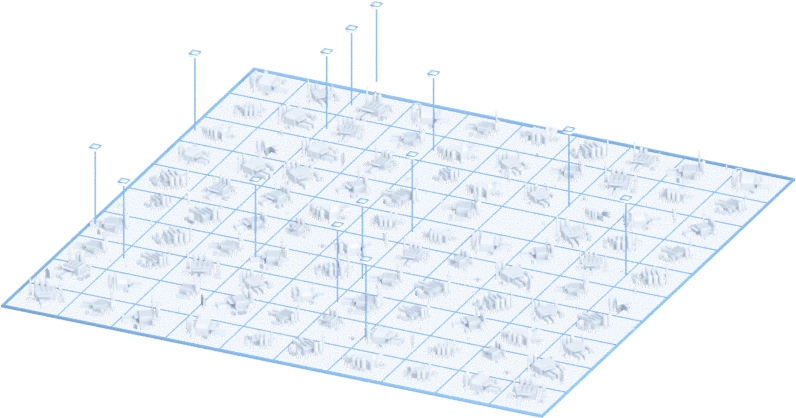

From the floor up
현장 바닥에서 올라온 산업 AI
리파이너리는 (주)베텍이 30년 넘게 산업 현장에서 쌓아 온 경험으로 만들었습니다.
회사 소개현장을 아는 팀이 만든
솔루션, 산업 AI
솔루션, 산업 AI
30년+산업 현장에서 쌓은 경험
100+데이터를 다룬 현장 수
20+철강 · 반도체 · 식품 등 산업군 수
30년 현장의 (주)베텍이
만든 제품
만든 제품


